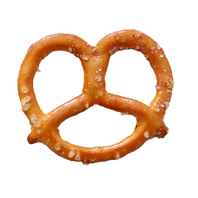

Download Pretzel Clicker Here (Windows Only)
Version 1.0.0
Pretzel Clicker is the first game I ever made. I made it because I was bored in school, and I needed something to keep me entertained. Like most 7th graders at the time, Cookie Clicker was a popular game to play, so I made my own version.
In Pretzel Clicker, you get pretzels through posting videos on MeTube, getting subscribers, and investing in the stock market. You can use your pretzels to feed the bear in the corner that is constantly begging for more pretzels. The game is an idle clicker game, so you can leave it running in the background when your teacher walks by.
